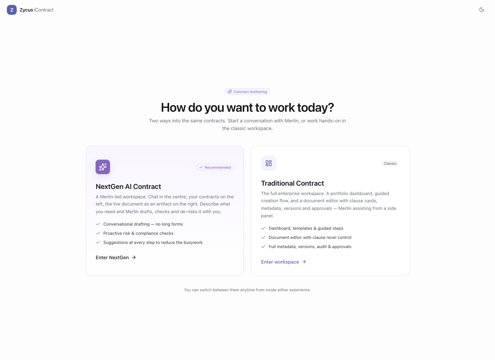
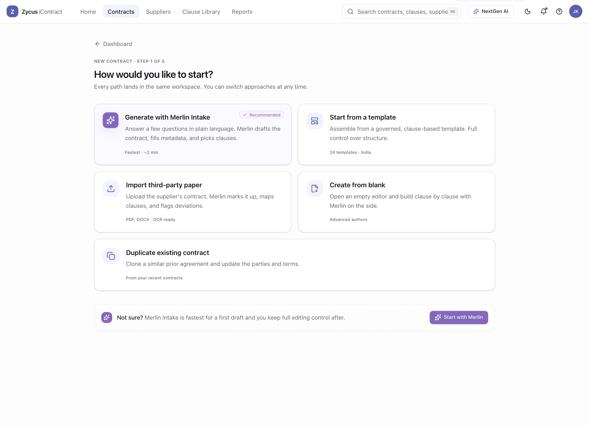
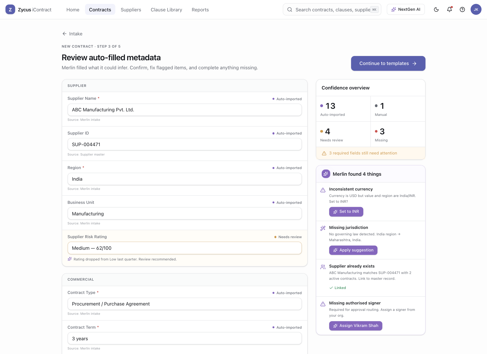
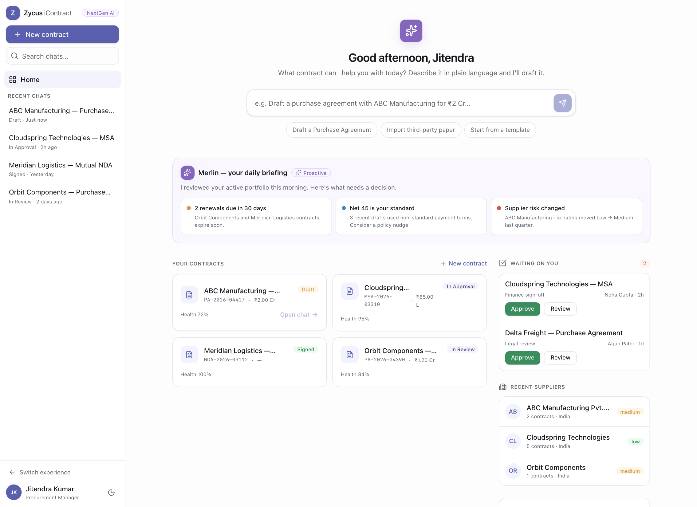
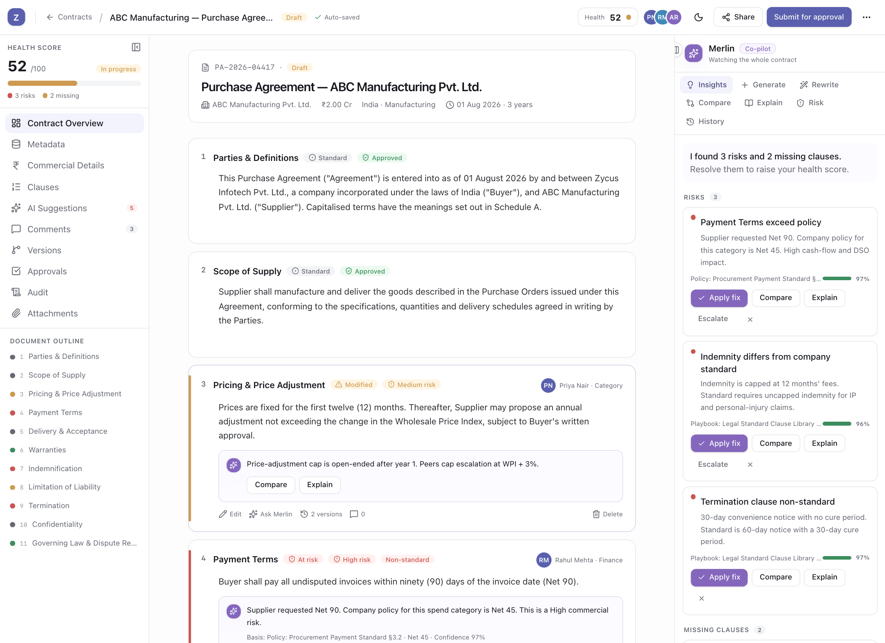
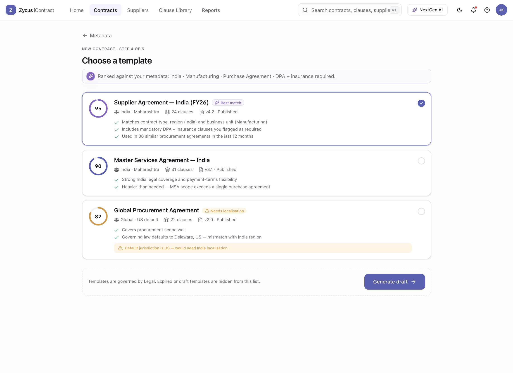
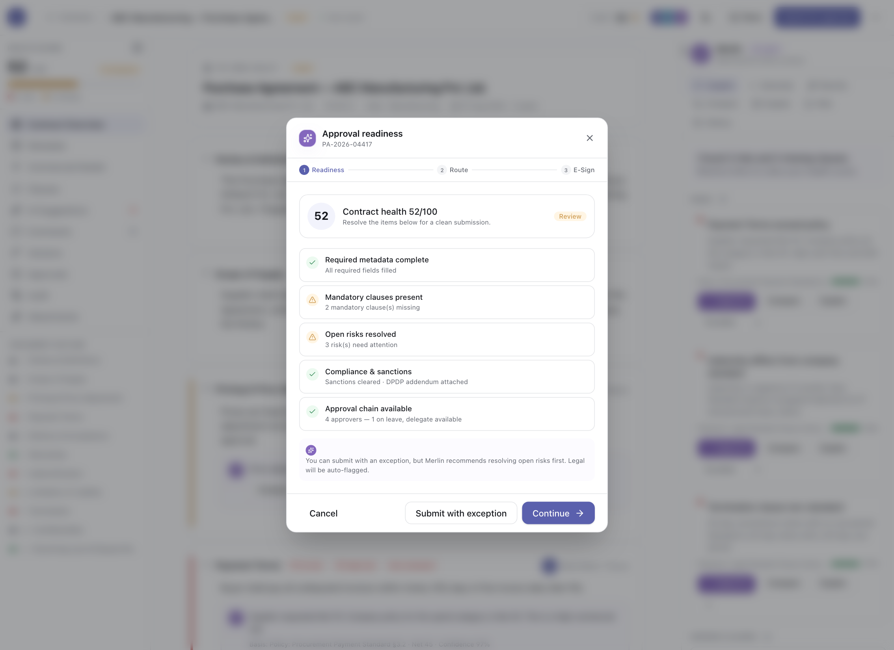
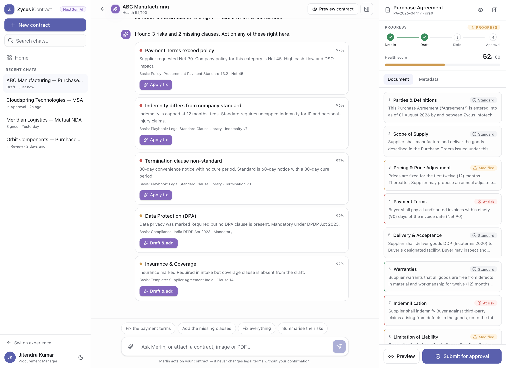

Redesigning Contract Authoring
for Zycus iContract
An AI-assisted enterprise contract authoring experience — where a procurement manager, legal counsel, and Merlin work the same document at the same time, and the software finally helps you decide rather than just capture what you already decided.
Contract authoring is where procurement slows down — not because people can't type, but because they can't decide with confidence.
A purchase agreement looks like a form. It behaves like a negotiation. Behind every field is a decision with money, risk, and a regulator attached — is Net 90 acceptable for this supplier? Is our indemnity cap defensible? Does this clause still match the India playbook after legal updated it last month?
Today those decisions are scattered across a template library nobody trusts, a legal inbox, three spreadsheets, and the tribal memory of whoever wrote the last similar contract. The authoring tool captures the outcome but does nothing to help reach it. So procurement managers over-rely on legal, legal drowns in low-risk redlines, and good contracts stall behind avoidable ones.
The redesign reframes the job. Authoring becomes a hybrid workspace — the document stays central, structure and progress live on the left, and Merlin, Zycus's AI, sits on the right as a context-aware co-pilot that surfaces risk, drafts clauses, and explains itself — while a human keeps every consequential decision.
iContract is one room in a much larger house.
You can't design contract authoring well without understanding where it sits. A contract isn't a document that appears from nowhere — it's the connective tissue of the whole source-to-pay lifecycle.
Sourced context
Zycus is a Source-to-Pay (S2P) suite — software that runs the full journey from finding a supplier to paying them. iContract is its Contract Lifecycle Management (CLM) module: authoring, negotiation, approval, storage and obligation tracking. Merlin is Zycus's AI layer that spans the suite.
Contract authoring is the hinge. It inherits data from Sourcing and Supplier Management upstream, and everything downstream — invoices, spend, compliance — is only as clean as the terms written here. A wrong payment term authored once becomes a thousand mis-paid invoices.
- Upstream — supplier record, sourcing award, negotiated pricing flow into the contract
- Here — terms, clauses, risk, obligations are decided
- Downstream — POs, invoices, spend analytics, renewals execute against them
A slow contract isn't a typing problem. It's an uncertainty problem.
Every friction below traces back to the same root: the person authoring can't see whether what they're writing is safe, standard, or a liability — so they stop and ask someone who can.
Hidden risk
Non-standard terms — a Net 90, a capped indemnity — slip through because nothing flags them against policy at the moment of writing.
Redline overload
Legal reviews everything, including the 80% that's standard, because there's no signal separating "routine" from "needs a lawyer".
Duplicate entry
The same supplier, value and dates are re-typed across intake, metadata and the document — each copy a chance to diverge.
Template roulette
Dozens of templates, unclear which is current or right for this geography. Pick wrong and you inherit the wrong jurisdiction.
Clause inconsistency
Fallback language lives in people's heads. Two authors solve the same negotiation two different — and unequal — ways.
Approval delays
Contracts reach approvers incomplete, bounce back, and wait — while nobody can see what's actually blocking them.
One document, five people, competing definitions of "done".
The procurement manager owns the outcome, but the contract only moves when four other people trust it. Designing for the author alone would just move the bottleneck.
Jitendra Kumar — Procurement Manager
Runs manufacturing category buys. Fluent in commercial terms, not in law. Judged on cycle time and savings, exposed on compliance he can't fully see.
Goals
Author a compliant contract fast, without waiting on legal for routine terms.
Pain points
Can't tell safe from risky; re-keys data; guesses at templates.
Success metric
Time-to-approval-ready, and how rarely legal sends it back.
Secondary
Legal Counsel
Wants to spend attention only on genuine deviations. Fears a non-standard clause slipping through unseen.
Secondary
Finance Controller
Wants payment terms and value to protect DSO and match budget. Fears a Net 90 hiding in clause 4.
Secondary
Business Owner
Wants the deal signed on time. Fears process for its own sake.
Secondary
Contract Admin
Wants clean metadata and an auditable trail. Fears renewals and obligations falling through.
Where the time actually goes.
Mapping the existing path, the wasted time clusters in three places — and none of them are the writing itself. They're the hand-offs and the not-knowing.
Find a template
Search a long library, unsure which is current or right for India.
Friction · guessworkRe-key metadata
Type supplier, value, dates into a long form already known upstream.
Duplicate workDraft & edit
Write clauses; paste fallback language remembered from last time.
InconsistentSend to legal
Email the doc, wait days for a full review of mostly-standard text.
Wait stateReconcile redlines
Merge comments across versions; lose track of what changed.
Version chaosSubmit & hope
Route for approval blind; bounce back if a field or clause is missing.
Rework riskWhat good looks like — borrowed as principles, not screens.
I studied how adjacent products earned trust and speed, then extracted the underlying pattern rather than copying the surface.
Document-first editors set the standard for focus
Notion and Word keep the artefact central and let tools orbit it. Enterprise CLM often buries the document under tabs — a step backwards for the person doing the actual writing.
AI copilots win on trust, not autonomy
The copilots people keep using (Cursor, Notion AI, GitHub Copilot) suggest, cite, and wait for accept. The ones people disable act without asking. Trust is a UX property, not a model property.
Enterprise systems reward legible state
Salesforce and Linear make status readable at a glance — a pill, a stage, a health bar. Ambiguity is the enemy of speed in multi-actor workflows.
CLM leaders compete on clause intelligence
The category's frontier (Ironclad, Icertis-class tooling) is playbook-driven authoring: standard vs. fallback language, risk scoring, deviation detection. That's where AI earns its place.
Where design effort buys the most decision-confidence.
Plotting opportunities on impact versus effort kept the sprint honest — chase the top-left first, park the bottom-right.
The bet
The highest-leverage moves aren't features — they're signals. Risk flags and auto-filled metadata are relatively cheap and change the author's confidence immediately. Clause intelligence — standard vs. fallback variants with risk scoring — is the harder, higher bet that defines the product's ceiling, so it's built in too.
Deferring voice and heavy theming wasn't dismissal; it was sequencing. They don't move the core metric — can I decide with confidence? — enough to earn sprint time yet.
Eight rules I could hold every screen against.
Principles only matter if they can settle an argument. Each of these decided a real trade-off later in the build.
01 · Guide, don't overwhelm
Enterprise power without enterprise clutter. Progressive disclosure over showing every control at once.
02 · The human keeps the decision
AI proposes; a person disposes. Nothing consequential — legal, financial, compliance — changes without an explicit human accept.
03 · AI must explain itself
Every suggestion shows what it found, why it matters, the policy basis, and a confidence level. No black-box verdicts.
04 · Compliance without friction
Guardrails should feel like help, not a gate. Surface the problem in context; never block the author from making progress.
05 · Context before chrome
The right panel always knows the current clause, supplier, policy and stage — so help is relevant without being asked.
06 · Trust before automation
Earn the right to automate by first being transparent and correct. Confidence is compounded, not assumed.
07 · Legible state
Status, risk and readiness are visible at a glance — a badge, a stripe, a health score — not buried in a report.
08 · Never a dead end
Missing information is surfaced, not blocked. Progress is always possible; the system tracks what's incomplete.
Structure that mirrors how a contract is actually reasoned about.
The IA isn't a menu — it's the contract's anatomy. Every left-nav item is a lens on the same object, not a separate destination.
Two product modes, one contract model.
The prototype actually supports two entry experiences: a traditional enterprise flow and a NextGen AI mode. Both operate on the same contract state, clauses, metadata, risks and approvals, so the product can serve both guided and high-agency users without splitting the mental model.

Mode chooser — the product is explicit about two ways of workingThis matters in the interview story: the prototype is not one monolithic flow. It deliberately supports both a structured enterprise path and a chat-led path, then keeps them grounded in the same contract model.

Traditional start — guided entry without locking the user into a wizardThe structured mode gives five clear starts: Merlin intake, template, import paper, blank editor and duplicate. This is where the product reduces first-use anxiety and makes each path legible.

Metadata review — confidence and correction are first-classAuto-filled fields, review states, missing states and one-click Merlin fixes turn setup into a decision-support step instead of a form dump. This is one of the clearest product strengths in the prototype.

NextGen home — AI-first entry with visible product stateThe AI mode is not just a blank chat box. It opens with recent contracts, portfolio cues, approvals and suggested actions, so even the conversational path starts from operational context.
Five ways to shape the work — and why only one respects both novice and expert.
The layout decision is the product decision. I pressured five models against the same question: does it help you decide, without getting in the way once you know what you're doing?
| Model | Strength | Why it fails here | Verdict |
|---|---|---|---|
| Long wizard | Safe for novices; enforces order | Punishes experts; hides the document; every contract feels like the first | ✕ |
| Tabbed record | Familiar enterprise pattern | Fragments one contract into disconnected screens; context lost on every switch | ✕ |
| Document-first | Focus on the artefact | Great for writing, weak on structure, risk and multi-actor governance | △ |
| AI-only chat | Fast for simple asks | If chat is the only artefact, the contract becomes a black box. High-stakes authoring needs visible state, clause structure and governed actions. | ✕ |
| Hybrid panel | Document central; structure left; AI right | Nothing — it carries novice guidance and expert speed in one frame | ✓ chosen |
The hybrid panel wins because it refuses the false choice. The document stays the hero (document-first's strength), structure and progress live left (the wizard's guidance, without its rigidity), and AI sits right (the copilot's power, kept transparent and optional). A novice follows the rails; an expert ignores them and just writes.
The prototype also proves a more nuanced point: NextGen AI works precisely because it is not AI-only. Its chat-led experience is paired with a live contract artifact, progress state and approval readiness, so conversation never replaces visibility.
The real workspace, annotated.
This is the actual traditional workspace from the prototype. The contract stays central, but risk, navigation, collaboration and AI are all present in the same frame, which is the heart of the product argument.

This rail keeps state legible. The user always knows their score, open risks, where they are in the contract, and which clauses need attention.
Each clause becomes an actionable object with status, owner, risk, inline Merlin note, variants and version history. This is where the prototype feels product-specific rather than a generic editor.
Merlin opens with concrete findings and action buttons. It is proactive, but still checkable: every fix stays visible and every change still belongs to the human.
The user does not leave this workspace to understand risk, chase a policy basis, inspect a clause, or assess readiness. The product collapses those decisions into one place.

Before the workspace: template choice is already opinionatedThe lead-in screens do not just collect data. They shape the draft. Template ranking, jurisdiction fit and recommendation logic push the author toward a safer starting point before writing begins.

After the workspace: submit becomes a visible gate, not a leap of faithThe approval modal turns the health score into a decision checkpoint. Readiness, routing and e-sign preparation are shown as explicit states, which gives the design a clear end-to-end arc.
Not a chatbot. A colleague who has read the playbook.
Merlin shows up in two forms in the prototype: as a right-hand co-pilot inside the traditional workspace, and as the centrepiece of the NextGen AI mode. In both, the principle is the same: AI is only useful here when the contract stays visible and the reasoning stays inspectable.
Why contextual, not conversational
Merlin always knows the current clause, the supplier, company policy, jurisdiction, prior contracts and the approval stage. That context is the product. It's why it can say "This supplier usually accepts Net 45" instead of waiting to be asked.
That principle is what makes the NextGen mode viable. The chat is not free-floating; it is paired with a live artifact showing draft progress, metadata completeness, risks and approval readiness. In other words, the prototype doesn't pick chat over product state — it binds them together.
The anatomy of a trustworthy suggestion
Every consequential suggestion exposes the same five things, so the human can verify in seconds rather than take it on faith:
- What it detected or generated
- Why it matters, in plain language
- Basis — the exact policy or playbook clause cited
- Confidence — a percentage, not a vibe
- Actions — Apply · Compare · Explain · Ignore · Escalate

NextGen AI mode — conversation plus artifact, not conversation instead of artifactThe chat drives momentum, but the artifact on the right keeps the contract legible. That pairing is the design move that keeps the AI mode interview-defensible: it is conversational without becoming opaque.
Guardrail
Never edits legal, financial or compliance text silently. AI-drafted clauses are flagged for review, not auto-approved.
Why it works
Suggested fixes, missing clauses, policy basis and progress all stay visible. The user can act quickly without surrendering verification.
What Merlin does across the workspace
Why three panels beat a wall of tabs.
Traditional enterprise UIs fragment one object across many screens. The panel model keeps the object whole and puts everything else in service of it — synchronized, collapsible and stateful. The prototype proves that the contract can stay whole even while metadata, AI, comments, approvals and audit all orbit it.
Selection is shared
Click a clause in the outline, a risk in Merlin, or the card itself — all three panels focus together. No context is lost switching tools.
Collapsible rails
Both side panels fold away for deep writing and return for review. The workspace can move from operational cockpit to focused drafting without forcing a mode switch.
One state model, many views
The same contract powers the traditional workspace, approval flow, comments, audit and the NextGen artifact. That shared state is what makes the product feel coherent instead of stitched together.
A restrained system that lets state do the talking.
Built on shadcn/ui and Tailwind with an 8-pt rhythm. Neutral surfaces, one brand indigo, one Merlin violet, and a disciplined semantic scale for risk — so colour always means something.
Colour — semantic, not decorative
Status & risk components
Confidence meters, health rings and risk stripes reuse the same scale, so a colour learned once reads everywhere.
Type scale
Foundations
- Spacing — 8-pt grid, radius 10px, soft elevation
- Components — buttons, badges, cards, tables, forms, tabs, toasts, switches
- AI components — suggestion card, confidence meter, streaming draft, diff/compare
- Theming — full light/dark via design tokens; oklch colour space
Enterprise means everyone, on every input, at any zoom.
Legal and procedural work is often done under deadline, on locked-down machines, by people using keyboards and screen readers. Accessibility here is table stakes, not polish.
Keyboard-first
Every action — swap a clause, apply a fix, route for approval — is reachable and operable without a mouse, with visible focus states throughout.
Screen-reader semantics
Panels, tabs, dialogs and toasts use proper roles and labels; risk and status are announced as text, never colour alone.
Contrast & colour independence
Targets WCAG AA. Risk is a stripe and a label and a colour — so it survives colour-blindness and greyscale printing.
Zoom & reflow
Layout reflows to 200% without loss; panels collapse gracefully so the document is never trapped behind chrome.
Error prevention
Consequential actions confirm; nothing legal changes silently; undo and audit history make mistakes recoverable.
Large documents
Outline navigation, virtualization and jump-to-clause keep a 300-page agreement usable, not a scroll of despair.
Edge cases are where trust is won.
If I were reviewing this in an interview, this is the slide that would tell me whether the product is only polished on the happy path, or genuinely thought through. The rule is simple: when something goes wrong, the user should still know what broke, what the system did, and what happens next.
Missing data should slow the user down only where it matters, not block the whole draft.
Every risk or gap should appear in context, not disappear into a report or approval bounce-back.
Good enterprise UX is not just warning the user. It tells them what the product will do next.
Bad data enters the contract
Supplier, signer, jurisdiction or currency is wrong, missing or duplicated.
Merlin flags the field in place, offers a one-click fix, and links to the master supplier record instead of creating duplicate data.
The user keeps drafting, but the data problem stays visible and recoverable.
AI is uncertain or unavailable
Merlin is low-confidence, or the AI layer cannot help at that moment.
The UI shows confidence and policy basis. If AI is down, authoring continues and the AI layer steps back gracefully.
Trust comes from honesty. The product never pretends certainty it does not have.
Policy or legal risk appears
A clause becomes non-standard, or mandatory language like DPA / insurance is missing.
The clause is highlighted against the playbook, alternatives stay visible, and missing mandatory language can be drafted in place.
Risk is caught while authoring, not days later in a legal inbox.
Approval or collaboration gets blocked
An approver is on leave, the contract is not ready, or several people are editing around the same draft.
The product offers delegation, health-gate explanations, comments, and version visibility before routing stalls.
Submission becomes predictable instead of blind, which is where enterprise confidence is actually won.
How I'd know it worked.
A redesign that can't be measured is just an opinion. These are the signals I'd instrument, each tied back to the decision-confidence thesis.
Where an AI-native CLM goes next.
The workspace is the platform. Once authoring is trustworthy, the same context — clause, supplier, policy, history — powers a much larger surface.
Negotiation AI
Predict counterparty positions and suggest fallbacks live during redlining.
Voice authoring
Draft and dictate clauses hands-free for field and mobile procurement.
Multilingual
Author, translate and reconcile bilingual contracts with clause parity.
Portfolio intelligence
Roll clause-level risk up to a portfolio view for category and legal leaders.
Obligation management
Turn authored obligations into tracked, alerting commitments post-signature.
Renewals
Proactive renewal drafting from prior terms and current market benchmarks.
Copilot actions
Let Merlin execute multi-step tasks — with preview and approval — not just advise.
Analytics
Cycle-time, deviation and negotiation dashboards that close the improvement loop.
What I'd defend, and what I'd do with more time.
Trade-offs I made on purpose
I chose depth on one flow over breadth across many. The Purchase Agreement was picked deliberately — it exercises nearly every CLM capability, so getting it right proves the model. A shallower tour of five contract types would have looked bigger and taught less.
I also chose to make Merlin proactive but never autonomous. That's slower than a fully automated draft, and I'd defend it every time — in a legal document, an un-checkable answer is a liability, not a feature.
What I'd improve with more time
- Real user research — this sprint used heuristic and competitive analysis; I'd validate the health-gate and Merlin's tone with actual procurement and legal users
- The negotiation loop — importing and reconciling third-party redlines deserves its own deep design pass
- Instrumented metrics — baseline the legacy flow and prove the confidence thesis with numbers
How this scales globally
The playbook-driven model is inherently localizable: swap the jurisdiction, policy set and clause library, and the same workspace serves a different legal regime. Merlin's citations make that localization auditable — every suggestion points at the rule it came from.
Now — walk into the prototype.
You've seen the thinking. The clickable prototype puts you in Jitendra's seat: intake with Merlin, resolve a Net 90 risk, watch the health score move, and route for approval.